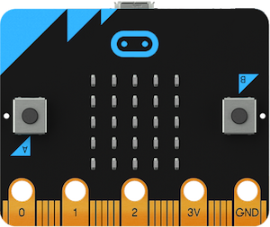
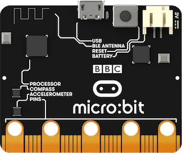
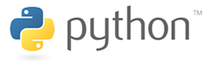
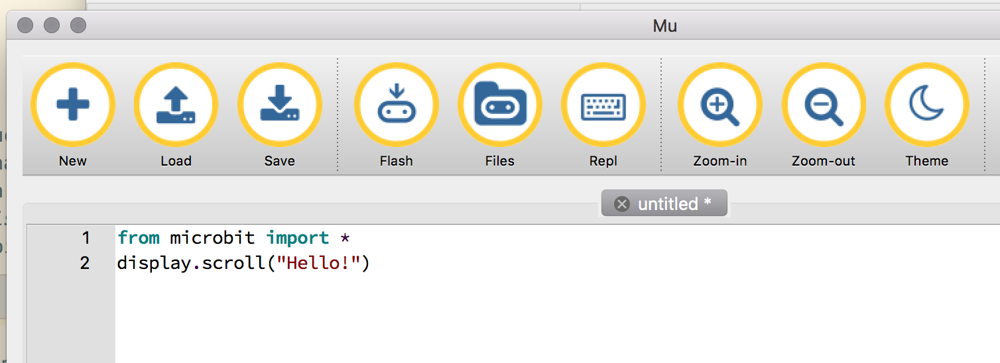
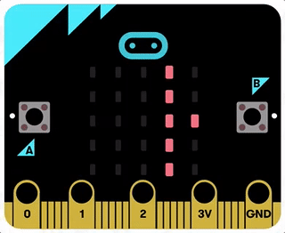
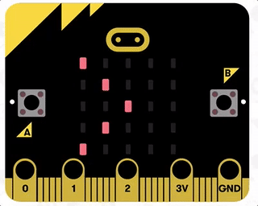
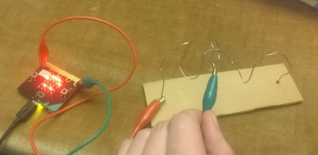
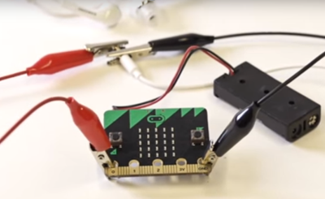
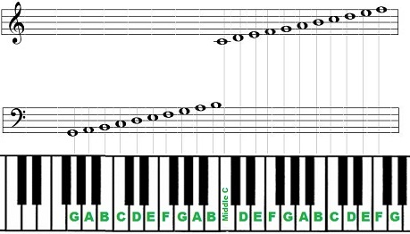

{kind=link}
{kind=link}
{kind=link}

De micro:bit is een embedded systeem, een (kleine) computer die bedoeld is om allerlei apparatuur/elektronica aan te sturen met behulp van software: knoppen, lampen, sensors, motors, machines, enz. Embedded systemen vind je zowat overal terug: auto's, printers, telefoons, fototoestellen, wasmachines, microgolf ovens, ... Des te "slimmer" apparaten zijn, des te groter de kans dat je er een embedded systeem in zal terugvinden.

Om even een korte rondleiding te geven van de micro:bit zelf; op de voorkant vind je het volgende terug:

Op de achterkant van de micro:bit vind je het volgende:
De micro:bit op zichzelf zal niets doen als er geen programma op staat. Om de micro:bit tot leven te brengen gaan we leren om er programma's voor te schrijven.
Een programma is op zich niets meer dan een lijst van instructies die je aan een computer geeft om uit te voeren. Als je mensen kan rond bevelen kan je dus ook programmeren :) Net zoals bij mensen, kan je best duidelijke instructies geven aan je computer, in een taal die de computer begrijpt. De programmeertaal die we voor de micro:bit gaan gebruiken heet Python.

De Python taal is niet zomaar een "speelgoed" programmeertaal die enkel bedoeld is voor de micro:bit. Het is een volwaardige programmeertaal waarmee je o.a. ook programma's kan maken voor je eigen computer. Ze wordt dagdagelijks gebruikt door bedrijven zoals Google, Disney of zelfs door Nasa om bv. de Mars Curiosity rover te testen.
Om kennis te maken met Python zullen we beginnen met het volgende kleine programma:
from microbit import *
display.scroll("Hello!")Het bestaat uit twee instructies. Het eerste, from microbit import *, duidt aan welke "woordenschat" nodig is in ons programma. In bijna alle programma's die we gaan schrijven zal deze instructie sowieso bovenaan staan. De tweede instructie, display.scroll("Hello!"), zal de tekst Hello! op het micro:bit scherm tonen.
Om dit programma nu op de micro:bit te zetten, doe je het volgende:

Als alles goed is gelukt zal je nu het volgende zien:

Let op! Een computer is een pietje-precies! Je moet de instructies exact overtypen. Zo wordt een onderscheid gemaakt tussen hoofdletters en kleine letters. Display betekent bv. niet hetzelfde als display. Mocht er een fout in je programma zitten, dan zal een (obscure) foutboodschap getoond worden op je micro:bit scherm. In zo'n geval corrigeer je de fout in het programma en druk je gewoon opnieuw op "Flash".
Tip! Tijdens het overtypen van de instructies zal je merken dat de Mu programmeeromgeving je op sommige plaatsen automatisch probeert aan te vullen. Dit kan heel handig zijn om sneller te typen, en ook om typfouten te voorkomen.
Tip! Je zal ook merken dat de Mu programmeeromgeving sommige woorden in je instructies een specifieke kleur geeft, bijvoorbeeld de tekst "Hello!". Dit is zo gedaan opdat je je programma gemakkelijker kan lezen, wat duidelijk zal worden naarmate onze programma's iets langer en complexer zullen worden.
Extra info over de from microbit import * instructie: Deze instructie duidt aan welk stuk "woordenschat" we nodig hebben in ons programma. Dit is net zoals je de woordenschat van bv. het Nederlands kan opdelen in stukken: basiswoorden, woorden over sport, woorden over wetenschap, enz.
Sommige woorden kunnen echter in meerdere stukken voorkomen; "golf" heeft bv. meerdere betekenissen: een natuurverschijnsel, een sport, radiogolven, een baai, ... Opdat programma's duidelijk en ondubbelzinnig zijn, moeten we dus eerst expliciet aangeven welke woordenschat nodig is. In dit geval, de "microbit" basiswoordenschat. Hiernaast is er ook bv. woordenschat om muziek te spelen op de micro:bit, draadloos te communiceren, ...
Ons eerste programma deed eigenlijk maar één ding; Hello! tonen. In dit voorbeeld gaan we wat meer instructies meegeven:
from microbit import *
display.scroll("Hello!")
sleep(3000)
display.scroll("Bye :)")Bekijk de uitvoering van dit programma
De instructies van een programma worden in volgorde uitgevoerd: eerst de woordenschat aangeven, dan Hello! tonen, dan de sleep(3000) instructie (waarmee je de micro:bit 3000 milliseconden laat wachten), en tenslotte Bye :) tonen.
Een belangrijk onderdeel van programma's schrijven is dat, tijdens de uitvoering van je programma, je allerlei informatie wil onthouden zodat je die informatie later in je programma kan gebruiken. Om een eenvoudig voorbeeld te geven:
from microbit import *
firstname = "Joske"
display.scroll("Hello, ")
display.scroll(firstname)
sleep(1000)
display.scroll("Bye, ")
display.scroll(firstname)Bekijk de uitvoering van dit programma
Een nieuwe instructie die je hier ziet staan is firstname = "Joske".
Dit kan je lezen als "Vanaf nu moet je de tekst Joske onthouden onder de naam firstname." Of, om het preciezer te zeggen: "Vanaf nu is de variabele firstname gelijk aan de tekst Joske."
Als je die variabele firstname dan later in je programma vernoemt, dan zal dit tijdens de uitvoering vervangen worden door Joske. In dit programma wordt de variabele bv. gebruikt in de instructie display.scroll(firstname).
Belangrijk! Voor alle talen, inclusief programmeertalen als Python, zijn er grammatica regels. Het wijzigen van een variabele, dus de firstname = "Joske" instructie, heeft in het algemeen de volgende vorm:
variabele = waardeEen "waarde" kan allerlei dingen zijn: een stuk tekst, een geheel getal, een reëel getal, of meer complexe vormen van informatie (waar we nu niet op in gaan). Hieronder nog enkele concrete voorbeelden waarin variabelen gewijzigd worden:
street = "Trammezandlei"
housenr = 122
pi = 3.14159Iets wat uiteindelijk een waarde zal worden mag ook, bijvoorbeeld een berekening:
fahrenheit = 20 * 9/5 + 32Tijd om onze kennis in iets leuks om te zetten! Onderstaand programma zal een kleine tekening maken op het micro:bit scherm:
from microbit import *
h = 9
display.set_pixel(1,1,h)
display.set_pixel(3,1,h)
h = 3
display.set_pixel(0,3,h)
display.set_pixel(1,4,h)
display.set_pixel(2,4,h)
display.set_pixel(3,4,h)
display.set_pixel(4,3,h)Een nieuwe instructie in dit voorbeeld is display.setpixel. Hiermee kan je een individueel lampje op het scherm aanzetten. Je zal intussen al gemerkt hebben dat veel van onze instructies haakjes bevatten, waartussen je één of meerdere waardes kan zetten. Dit zijn de parameters van de instructie. Een voorbeeld uit ons eerste programma is display.scroll("Hello"); deze instructie heeft dus één parameter, "Hello".
In het geval van display.setpixel moet je drie parameters meegeven:
Dus, als je display.set_pixel(1,2,3) zou ingeven, dan zal je het lampje aanzetten op kolom 1, rij 2, met helderheid 3.
Even toetsen! Na het uitvoeren van het programma wordt een tekening getoond. Welke tekening krijg je te zien? Kan je verklaren waarom de ogen in de tekening veel feller zijn dan de rest?
Volgend programma laat een "startsignaal" op je micro:bit zien, dat respectievelijk 1,2,3 lampen laat branden, en daarna "Go!" op het scherm toont:
from microbit import *
x = 1
display.set_pixel(x,2,9)
x = x + 1
sleep(1000)
display.set_pixel(x,2,9)
x = x + 1
sleep(1000)
display.set_pixel(x,2,9)
x = x + 1
sleep(1000)
display.scroll("Go!")Bekijk de uitvoering van dit programma
Het enige speciale in dit programma zijn de x = x + 1 instructies. Deze kan je lezen als "Variabele x is vanaf nu gelijk aan: de oude waarde van x plus 1." Of korter gezegd: "Verhoog de waarde van x met 1."
Even toetsen! Wat is de waarde van y op het einde van dit programma?:
y = 8
x = 4
y = y - 2
y = y - xIn het vorige programma heb je misschien gemerkt dat er eigenlijk drie keer hetzelfde wordt herhaald om het volgende lampje aan te zetten. Meer bepaald, dit stukje is telkens herhaald:
display.set_pixel(x,2,9)
x = x + 1
sleep(1000)Drie keer iets herhalen op deze manier valt nu nog mee, maar je programma zou gigantisch worden als je duizenden keren hetzelfde moet herhalen! Een betere manier om juist hetzelfde resultaat te verkijgen is als volgt:
from microbit import *
x = 1
while x <= 3:
display.set_pixel(x,2,9)
x = x + 1
sleep(1000)
display.scroll("Go!")Deze versie maakt gebruik van de while instructie. Hiermee kan je herhaling op een compacte manier neerschrijven. In ons programma staat er while x <= 3:. Dit kan je lezen als: "Zolang x ≤ 3, dan moet je de hieropvolgende geïndenteerde instructies blijven herhalen."
Met "geïndenteerd" wordt bedoeld: "naar rechts geschoven". (Met andere woorden, een instructie is geïndenteerd als er een aantal spaties voor getypt zijn. In ons voorbeeld zijn de instructies op regel 4,5 en 6 allemaal geïndenteerd.)
Zodra x niet meer kleiner of gelijk aan 3 is, dan ga je verder met de eerste instructie die niet meer geïndenteerd is. In ons voorbeeld is dat de instructie op regel 7: display.scroll("Go!").
Belangrijk! Er staat "Zolang x ≤ 3". Ga je dan constant moeten nakijken of x kleiner of gelijk aan 3 is geworden? Nee. Dit wordt enkel nagekeken telkens nadat de geïdenteerde instructies een keer zijn doorlopen.
Let op! In het programma staat er <= in plaats van het kleiner-of-gelijk-aan (≤) teken. Dit is zo om praktische redenen. Je kan namelijker veel gemakkelijker <= typen dan ≤. (Er staat dan ook geen ≤ toets op je toetsenbord...)
Belangrijk! In onze while instructie noemt het x <= 3 gedeelte de conditie. In het algemeen kan je een while instructie dus lezen als "Zolang de conditie voldaan is, blijf de hieropvolgende geïndenteerde instructies herhalen."
Er zijn veel mogelijke vormen van condities, en we zullen er nog enkele van gebruiken. Om alvast enkele voorbeelden van condities te geven:
a > 4 Is a groter dan 4?
b==5 Is b gelijk aan 5? (Let op! Je moet twee gelijkheidstekens typen!)
c!=6 Is c niet gelijk aan 6?
d>=7 and e == 8 Is d ≥ 7 én e gelijk aan 8?
d>=7 or e == 8 Is d ≥ 7 of e gelijk aan 8?
button_a.ispressed() Is de A-knop van de micro-bit nu ingedrukt?
Zoals je ziet aan deze voorbeelden kan je condities altijd lezen als een ja/nee-vraag.
Even toetsen! Wat is de waarde van x op het einde van dit programma?
x=2
while x != 8:
x = x + 2
x = x + 1Tenslotte, de laatste instructie die we gaan bekijken is de if instructie, die het mogelijk maakt om keuzes te maken in programma's. Bekijk even volgend programma:
from microbit import *
if button_a.is_pressed():
display.show(Image.HAPPY)
else:
display.show(Image.SAD)
sleep(2000)
display.show(Image.SURPRISED)Dit programma kan je als volgt lezen: "Als (if) de A-knop is ingedrukt, dan moet je display.show(Image.HAPPY) uitvoeren, en anders (else) moet je display.show(Image.SAD) uitvoeren.
De if instructie heeft, net als de while instructie een conditie. In het algemeen kan je een if instructie als volgt lezen: "Als de conditie voldaan is, dan voer je het geïndenteerde gedeelte na if uit. Als de conditie niet voldaan is, dan voer je het geïndenteerde gedeelte na else uit."
Tip! De display.show instructie kan je gebruiken om een ingebouwde afbeelding te tonen. Bekijk volledige lijst met ingebouwde afbeeldingen.
Als je het programma van daarnet zou uit uitvoeren, dan moet je de A-knop direct indrukken wanneer het programma start om een blij gezichtje te krijgen. Als je een fractie van een seconde te laat drukt is de if instructie al lang uitgevoerd, en krijg je dus een droef gezicht te zien.
Opdat we op eender welk moment op de A-knop kunnen drukken om een blij gezichtje te krijgen zouden we de if instructie eigenlijk willen herhalen. Dat kan! Bekijk even volgend programma:
from microbit import *
while true:
if button_a.is_pressed():
display.show(Image.HAPPY)
else:
display.show(Image.SAD)Hierin steken we de if instructie, plus alle geïndenteerde instructies die erbij horen, in een while instructie. Hierdoor wordt de if instructie herhaald.
Belangrijk! De true conditie in onze while instructie is een speciale conditie die altijd voldaan is. Hierdoor wordt de if instructie dus eindeloos herhaald!
Geloof het of niet, maar nu we overweg kunnen met variabelen, while instructies en if instructies, hebben we eigenlijk al alle basisconcepten om eender welk programma te kunnen schrijven! De volledige Python programmeertaal is natuurlijk veel uitgebreider, maar de meeste concepten die er nog bij komen dienen om gemakkelijk overweg te kunnen met grotere programma's. De meeste programma's in de bedrijfswereld bestaan dan ook uit duizenden, soms wel miljoenen, regels aan instructies!
Je hebt reeds gezien hoe je tekeningen kan tonen op de micro:bit. Kan je deze kennis ook gebruiken om animaties te tonen die zich eindeloos herhalen? (om wat inspiratie te geven: vuurwerk, een wandelend stokventje, een kloppend hart, een analoge klok, ...)

Hints!
display.clear() instructie kan je je scherm in één keer wissen.sleep gebruiken om even te wachten nadat een tekening getoond is.Doel van het "bibberspel" is dat je, zoals je kan zien op de foto hieronder, een lus over een gekronkelde draad kan bewegen, zonder de draad aan te raken.

Eerst zullen we ons parcours maken :
Hints!
pin0.is_touched().not voor.Op de micro:bit zelf zit geen luidspreker, maar met de aansluitingen onderaan kunnen we bv. wel oortjes aansluiten om muziek af te spelen. Dit kan je doen met krokodillenklemmen, zoals aangegeven op de foto's hieronder:

Probeer alvast volgend programma uit om te testen of de oortjes goed zijn aangesloten:
import music
music.play(music.NYAN)Dit zal één van de ingebouwde deuntjes afspelen :) Alles goed gelukt? Dan kunnen we nu zelf onze eigen muziek schrijven! Bekijk even volgend programma dat de noten van Broeder Jacob afspeelt:
import music
tune = ["C", "D", "E", "C", "C", "D", "E", "C", "E", "F", "G", "E", "F", "G"]
music.play(tune)Wat hier nieuw is, is dat een variabele ook een lijst van waardes mag zijn. Dit is hier het geval voor de tune variabele, die een lijst van muzieknoten voorstelt.
De noten in dit programma noemen niet do, re, mi, enz. ; in het Engels worden namelijk letters gebruikt om de verschillende noten aan te duiden: C (do), D (re), E (mi), F (fa), G (sol), A (la), B (si)
In plaats van Broeder Jacob, kan je nu de micro:bit een ander deuntje laten afspelen? (Je kan de partituren van zowat eender wat vinden op Google Afbeeldingen door "piano tabs" achter je zoekterm te zetten!)
Om je te helpen bij het omzetten van de partituur naar de juiste namen van elke noot:

Extra! Je zal wellicht gehoord hebben dat Broeder Jacob niet helemaal juist klonk; dit was zo omdat elke noot nu even lang werd afgespeeld. Er is ook een iets meer geavanceerde notatie waarin je kan aangeven hoe lang elke noot moet duren:
import music
tune = ["C4:4", "D4:4", "E4:4", "C4:4", "C4:4", "D4:4", "E4:4", "C4:4",
"E4:4", "F4:4", "G4:8", "E4:4", "F4:4", "G4:8"]
music.play(tune)In deze versie is de laatste noot aangegeven als "G4:8". Dit kan je lezen als "Druk op de vierde G(sol)-toets van een pianoklavier, voor 8 tellen lang."
In dit spel is het de bedoeling dat de speler(s) een bepaald parcours afleggen, waarbij je je micro:bit in de hand vasthoudt en deze steeds zo horizontaal mogelijk moet houden. Als je micro:bit uit balans is, val je weg uit het spel. Je kan bv. een afbeelding op je micro:bit tonen zodra je uit balans bent. Hoe je het spel wint kan je kiezen: bv. door het parcours te voltooien, of door als enige over te blijven.
Je kan het parcours zo moeilijk of makkelijk maken als je zelf wil, waarbij je bv. tussen stoelen moet slalommen, onder tafels moet kruipen, enz. Je kan het spel ook moeilijker maken door toe te laten dat spelers elkaar mogen aanraken. (Als je iemand anders uit balans probeert te brengen riskeer je natuurlijk dat ze zullen terugduwen :) )
Hints!
accelerometer.get_x() geeft een getal tussen -1024 en 1024 terug om aan te geven in hoeverre de micro:bit naar links/rechts is gedraaid. Als dit getal dus rond de 0 schommelt is de micro:bit in balans (althans wat rotatie rond de X-as betreft). Analoog hieraan duidt accelerometer.get_y() aan hoever de micro:bit naar voor/achter is gedraaid, ook met een waarde tussen -1024 en 1024.In deze oefening gaan we het kompas in de micro:bit gebruiken om ons het noorden te kunnen tonen. Begin je programma sowieso met volgende instructies:
from microbit import *
if not compass.is_calibrated():
compass.calibrate()De tweede en derde instructies zorgen ervoor dat, mocht het kompas van de micro:bit niet gekalibreerd zijn, dan wordt de kalibratieprocedure eerst uitgevoerd.
Om het programma verder af te maken heb je nog het volgende nodig:
compass.heading() geeft je de huidige waarde van het kompas als een getal tussen 0 en 360. Als de waarde 0 is, wijst de micro:bit nu naar het noorden.In deze oefeningen maken we van de micro:bit een dobbelsteen: telkens je schudt met de micro:bit, zal er een willekeurig getal op het scherm getoond worden.
Hints!
accelerometer.was_gesture("shake")random.randint(1, 6)import random te gebruiken.In het oorspronkelijke "Simon" geheugenspel wordt een willekeurige reeks van kleuren getoond. De speler moet deze reeks dan onthouden en terug correct kunnen ingeven. Daarna begint het spel opnieuw, maar met een nieuwe reeks.
Met de micro:bit gaan we een variant van "Simon" maken: we tonen op het scherm eerst een reeks van pijlen (links,rechts, boven of onder). De speler moet vervolgens deze reeks correct ingeven door de micro:bit naar links/rechts/boven/onder te kantelen.
Hints!
gestures = ["up", "down", "left", "right"]random.choice(gestures).accelerometer.current_gesture() == "left"Kan je een tetris spel maken waar de blokjes altijd 1x1 groot zijn? (Grotere blokjes zijn niet echt praktisch op zo'n klein scherm :) )
Hints!
microbit.display.get_pixel(x, y) Dit geeft de helderheid van de lamp op kolom x, rij y, terug.